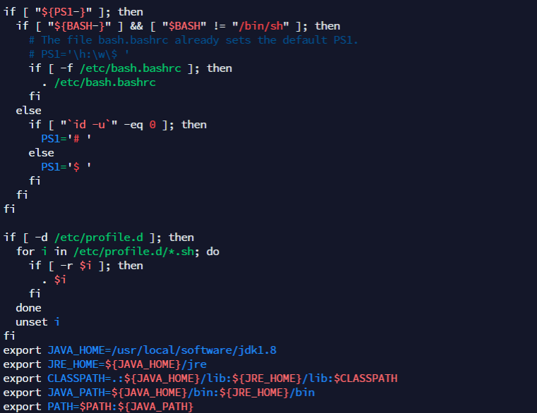
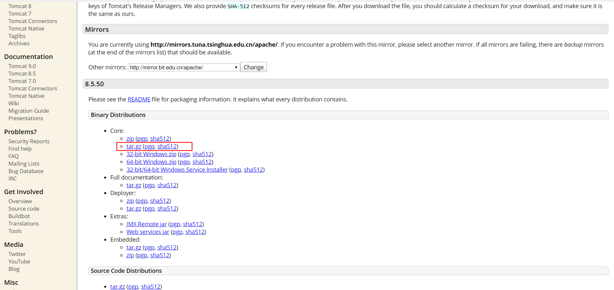
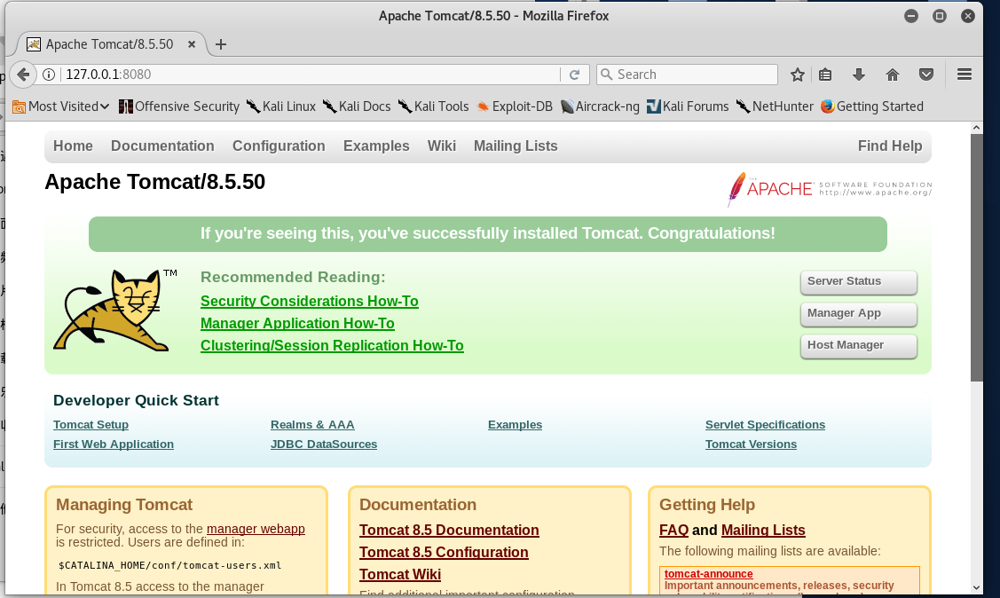

任何一件事，只要心甘情愿，总是能够变得简单，不会有任何复杂的借口和理由。
JDK的安装和配置
下载 jdk-8u241-linux-x64.tar.gz 传到kali下 /usr/local/xb
官网下载地址 http://www.oracle.com/technetwork/java/javase/downloads/jdk8-downloads-2133151.html
解压并重命名文件
tar zxvf jdk-8u241-linux-x64.tar.gz
mv jdk-8u241-linux-x64.tar.gz jdk1.8
编辑配置文件 etc/profile
在文档最下方添加以下环境变量配置代码
1 | export JAVA_HOME=/usr/local/xb/jdk1.8 |

使配置立即生效
source /etc/profile
Tomcat的安装和配置
下载 apache-tomcat-8.5.50.tar.gz 传到kali下 /usr/local/xb
官网下载地址 http://tomcat.apache.org/download-80.cgi

解压并重命名文件
tar zxvf apache-tomcat-8.5.50.tar.gzmv apache-tomcat-8.5.50 tomcat8.5.50
编辑配置文件 etc/profile
在文档最下方添加以下环境变量配置代码
export CATALINA_HOME=/usr/local/software/tomcat8.5.50
使配置立即生效
source /etc/profile
启动Tomcat服务
./tomcat8.5.50/bin/startup.sh
关闭Tomcat服务
./tomcat8.5.50/bin/shutdown.sh
tomcat根目录
tomcat8.5.50/webapps/ROOT
